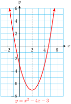

Section 6.2 Solving Quadratic Equations
Not every quadratic equation can be solved by factoring or by extraction of roots. For example, the expression \(x^2 + x - 1\) cannot be factored, so the equation \(x^2 + x - 1 = 0\) cannot be solved by factoring. For other equations, factoring may be difficult. In this section we learn two methods that can be used to solve any quadratic equation.
Subsection Squares of Binomials
In Section 2.1 we used extraction of roots to solve equations of the form
where the left side of the equation includes the square of a binomial, or a perfect square. We can write any quadratic equation in this form by completing the square.
Consider the following squares of binomials.
| Square of binomial \((x+p)^2\) | \(p\) | \(2p\) | \(p^2\) |
| 1. \((x+\alert{5})^2=x^2+10x+25\) | \(\alert{5}\) | \(2(\alert{5})=10\) | \(\alert{5}^2=25\) |
| 2. \((x\alert{{}-{}3})^2=x^2-6x+9\) | \(\alert{-3}\) | \(2(\alert{-3})=-6\) | \(\alert{-3}^2=9\) |
| 3. \((x\alert{{}-{}12})^2=x^2-24x+144\) | \(\alert{-12}\) | \(2(\alert{-12})=-24\) | \(\alert{-12}^2=144\) |
In each case, the square of the binomial is a quadratic trinomial,
Note that the coefficient of the linear term, \(2p\text{,}\) is twice the constant in the binomial, and the constant term of the trinomial, \(p^2\text{,}\) is its square.
Checkpoint 6.25. QuickCheck 1.
We would like to reverse the process and write a quadratic expression as the square of a binomial. For example, what constant term can we add to
to produce a perfect square trinomial? Compare the expression to the formula above:
We see that
and
We substitute these values for \(p^2\) and \(p\) into the equation to find
Notice that in the resulting trinomial, the constant term is equal to the square of one-half the coefficient of \(x\text{.}\) In other words, we can find the constant term by taking one-half the coefficient of \(x\) and then squaring the result. Adding a constant term obtained in this way is called completing the square.
Example 6.26.
Complete the square by adding an appropriate constant; write the result as the square of a binomial.
\(\displaystyle x^2 - 12x + {}\fillinmath{XXXXXX}\)
\(\displaystyle x^2 + 5x + {}\fillinmath{XXXXXX}\)
-
One-half of \(-12\) is \(-6\text{,}\) so the constant term is \((-6)^2\text{,}\) or \(36\text{.}\) We add \(36\) to obtain
\begin{align*} x^2 - 12x \alert{{}+{}36}=(x - 6)^2\amp\amp\amp {\large\blert{\underset{p^2\, = \,(-6)^2 \,=\, 36\hphantom{0}}{\stackrel {p\, = \,\frac{1}{2}(-12) \,=\, -6}{}}}} \end{align*} -
One-half of \(5\) is \(\dfrac{5}{2}\text{,}\) so the constant term is \(\left(\dfrac{5}{2}\right)^2\text{,}\) or \(\dfrac{25}{4}\text{.}\) We add \(\dfrac{25}{4}\) to obtain
\begin{align*} x^2 +5x \alert{{}+{}\frac{25}{4}}=\left(x +\frac{5}{2}\right)^2 \amp\amp\amp {\large \blert{\underset{p^2\, = \,(\frac{5}{2})^2 \,= \,\frac{25}{4}}{\stackrel {p \,= \,\frac{1}{2}(5) \,=\, \frac{5}{2}~~ }{}}}} \end{align*}
Note 6.27.
You may find it helpful to visualize completing the square geometrically. We can think of the expression \(x^2 + 2px\) as the area of a rectangle with dimensions \(x\) and \(x + 2p\text{.}\) Here is an example.
The rectangle with length \(x + 10\) and width \(x\) has area \(x(x + 10) = x^2 + 10x\text{,}\) as shown in figure (a).
We would like to cut the rectangle into pieces and rearrange them so that we can make a square.
In figure (b), we move half of the \(x\)-term so that each side of the square has length \(x + 5\) (note that \(p = \frac{1}{2} (10) = 5\)).
In figure (c) we see that the missing corner piece has area \(p^2 = 5^2 = 25\text{.}\)

Checkpoint 6.28. Practice 1.
Complete the square by adding an appropriate constant; write the result as the square of a binomial.
\(x^2 - 18x{} +\)\(= (x+\) \()^2\)
\(x^2 +9x{} +\)\(= (x+\) \()^2\)
For part (a): \(p=\frac{1}{2}(-18)={}\)_____ , \(p^2={}\) ______
For part (b): \(p=\frac{1}{2}(9)={}\)_____ , \(p^2={}\) ______
\(81\)
\(-9\)
\({\frac{81}{4}}\)
\({\frac{9}{2}}\)
\(\displaystyle x^2 - 18x + 81 = (x - 9)^2\)
\(\displaystyle x^2+9x+\dfrac{81}{4}=\left(x+\dfrac{9}{2}\right)^2\)
Subsection Solving Quadratic Equations by Completing the Square
Now we will use completing the square to solve quadratic equations. First, we will solve equations in which the coefficient of the squared term is 1. Consider the equation
and follow the steps to find the solutions.
Step 1
Begin by moving the constant term to the other side of the equation, to get
Step 2
Now complete the square on the left. Because
we add \(9\) to both sides of our equation to get
Step 3
The left side of the equation is now the square of a binomial, namely \((x - 3)^2\text{.}\) We write the left side in its square form and simplify the right side, which gives us
(You can check that this equation is equivalent to the original one; if you expand the left side and collect like terms, you will return to the original equation.)
Step 4
We can now use extraction of roots to find the solutions. Taking square roots of both sides, we get
The solutions are \(7\) and \(-1\text{.}\)
Note 6.29.

The graph of \(y = x^2 - 6x - 7\) is shown in at left. Note that the \(x\)-intercepts of the graph are \(x = 7\) and \(x = -1\text{,}\) and the parabola is symmetric about the vertical line halfway between the intercepts, at \(x = 3\text{.}\)
We can also solve \(x^2 - 6x - 7 = 0\) by factoring instead of completing the square. Of course, we get the same solutions by either method. In Example 6.30, we will solve an equation that cannot be solved by factoring.
Example 6.30.
Solve \(x^2 - 4x - 3 = 0\) by completing the square.
-
First, write the equation with the constant term on the right side.
\begin{equation*} x^2 - 4x{} ~ \fillinmath{XXXXXX} {}=3 \end{equation*} Now complete the square on the left side. The coefficient of \(x\) is \(-4\text{,}\) so
\begin{equation*} p = \frac{1}{2}(-4) = -2 ~~~\text{ and } ~~~ p^2 = (-2)^2 = 4 \end{equation*}We add \(4\) to both sides of our equation:\begin{equation*} x^2 - 4x \alert{{}+4}=3\alert{{}+4} \end{equation*}-
Write the left side as the square of a binomial, and combine terms on the right side:
\begin{equation*} (x - 2)^2 =7 \end{equation*} -
Finally, use extraction of roots to obtain
\begin{align*} x - 2 \amp =\sqrt{7} \amp\text{or} \amp\amp x - 2 \amp= -\sqrt{7} \amp \blert{\text{Solve each equation.}}\\ x \amp =2+\sqrt{7} \amp\text{or} \amp\amp x \amp=2 -\sqrt{7} \end{align*}The solutions are \(2+\sqrt{7}\approx 4.646\) and \(2-\sqrt{7}\approx -0.646\text{.}\) The graph of \(y = x^2 - 4x - 3\) is shown below.

Checkpoint 6.31. QuickCheck 2.
Checkpoint 6.32. Practice 2.
-
Follow the steps to solve by completing the square: \(x^2 - 1 = 3x\text{.}\)
-
Write the equation with the constant on the right.
\(=\)
-
Complete the square on the left:
\(p = \dfrac{1}{2}(-3) ={}\), \(p^2={}\)
Add \(p^2\) to both sides.
\(=\)
-
Write the left side as a perfect square; simplify the right side.
\(\large(\)\(\large)^2=\)
-
Solve by extracting roots.
Solutions: \(x=\)
List all the values that are solutions. Use a comma to separate different solutions.
-
-
Find approximations to two decimal places for the solutions.
Solutions: \(x=\)
List all the values that are solutions. Use a comma to separate different solutions.
-
Graph the parabola \(y = x^2 - 3x - 1\) in the window
\begin{equation*} \begin{aligned}[t] \text{Xmin} \amp = -4.7 \amp\amp \text{Xmax} = 4.7\\ \text{Ymin} \amp = -5 \amp\amp \text{Ymax} = 5 \end{aligned} \end{equation*}
\(x^{2}-3x\)
\(1\)
\(-{\frac{3}{2}}\)
\({\frac{9}{4}}\)
\(x^{2}-3x+{\frac{9}{4}}\)
\(1+{\frac{9}{4}}\)
\(x+-{\frac{3}{2}}\)
\({\frac{13}{4}}\)
\({\frac{3}{2}}+\sqrt{{\frac{13}{4}}}, {\frac{3}{2}}-\sqrt{{\frac{13}{4}}}\)
\(3.30278, -0.302776\)
\(\displaystyle x=\dfrac{3}{2}\pm\sqrt{\frac{13}{4}}\)
\(x\approx -0.30\) or \(x\approx 3.30\)
Checkpoint 6.33. Pause and Reflect.
Explain how to tell whether \(x^2+bx+c\) is the square of a binomial.
Subsection The General Case
Our method for completing the square works only if the coefficient of \(x^2\) is \(1\text{.}\) If we want to solve a quadratic equation whose lead coefficient is not \(1\text{,}\) we first divide each term of the equation by the lead coefficient.
Example 6.34.
Solve \(~~2x^2 - 6x - 5 = 0\text{.}\)
-
Because the coefficient of \(x^2\) is \(2\text{,}\) we must divide each term of the equation by \(2\text{.}\)
\begin{equation*} x^2 - 3x - \frac{5}{2}= 0 \end{equation*}Now we proceed as before. Rewrite the equation with the constant on the right side.
\begin{equation*} x^2 - 3x ~\fillinmath{XXXXXX} = \frac{5}{2} \end{equation*} -
Complete the square:
\begin{equation*} p = \frac{1}{2}(-3) = \frac{-3}{2} ~~~\text{ and } ~~~ p^2 = \left(\frac{-3}{2}\right)^2 = \frac{9}{4} \end{equation*}Add \(\frac{9}{4}\) to both sides of our equation:
\begin{equation*} x^2 - 3x \alert{{}+\frac{9}{4}}=\frac{5}{2}\alert{{}+\frac{9}{4}} \end{equation*} -
Rewrite the left side as the square of a binomial and simplify the right side to get
\begin{equation*} \left(x - \frac{3}{2}\right)^2 =\frac{19}{4} \end{equation*} -
Finally, extract roots and solve each equation for \(x\text{.}\)
\begin{equation*} x - \frac{3}{2} =\sqrt{\frac{19}{4}} ~~~\text{ or }~~~ x - \frac{3}{2} = -\sqrt{\frac{19}{4}} \end{equation*}The solutions are \(\dfrac{3}{2}+\sqrt{\dfrac{19}{4}}\) and \(\dfrac{3}{2}-\sqrt{\dfrac{19}{4}}\text{.}\)
Using a calculator, we can find decimal approximations for the solutions: \(3.679\) and \(-0.679\text{.}\)
Caution 6.35.
In the Example above, it is essential that we first divide each term of the equation by \(2, \) the coefficient of \(x^2\text{.}\) The following attempt at a solution is incorrect.
You can check that \((2x - 3)^2\) is not equal to \(2x^2 - 6x + 9\text{.}\) We have not written the left side of the equation as a perfect square, so the solutions we obtain by extracting roots will not be correct.
Checkpoint 6.36. QuickCheck 3.
Checkpoint 6.37. Practice 3.
-
Follow the steps to solve by completing the square:
\begin{equation*} -4x^2- 36x-65 = 0\text{.} \end{equation*}-
Divide each term by \(-4\text{.}\) Write the equation with the constant on the right.
\(=\)
-
Complete the square on the left:
\(p = \dfrac{1}{2}(9) ={}\), \(p^2={}\)
Add \(p^2\) to both sides.
\(=\)
-
Write the left side as a perfect square; simplify the right side.
\(\large(\)\(\large)^2=\)
-
Solve by extracting roots.
Solutions: \(x=\)
List all the values that are solutions. Use a comma to separate different solutions.
-
-
Graph \(y = -4x^2 - 36x - 65\) in the window
\begin{equation*} \begin{aligned}[t] \text{Xmin} \amp = -9.4 \amp\amp \text{Xmax} = 0\\ \text{Ymin} \amp = -10 \amp\amp \text{Ymax} = 20 \end{aligned} \end{equation*}
\(x^{2}+9x\)
\(-{\frac{65}{4}}\)
\({\frac{9}{2}}\)
\({\frac{81}{4}}\)
\(x^{2}+9x+{\frac{81}{4}}\)
\(-{\frac{65}{4}}+{\frac{81}{4}}\)
\(x+{\frac{9}{2}}\)
\(4\)
\(-{\frac{5}{2}}, -{\frac{13}{2}}\)
\(x=\dfrac{-13}{2} \text{,}\) \(x=\dfrac{-5}{2}\)
Here is a summary of the steps for solving quadratic equations by completing the square.
To Solve a Quadratic Equation by Completing the Square.
Write the equation in standard form.
Divide both sides of the equation by the coefficient of the quadratic term, and subtract the constant term from both sides.
-
Complete the square on the left side:
Multiply the coefficient of the first-degree term by one-half, then square the result.
Add the value obtained in (a) to both sides of the equation.
Write the left side of the equation as the square of a binomial. Simplify the right side.
Use extraction of roots to finish the solution.
Checkpoint 6.38. Pause and Reflect.
How does creating the square of a binomial help us solve a quadratic equation?
Subsection Quadratic Formula
Instead of completing the square every time we solve a new quadratic equation, we can complete the square on the general quadratic equation,
and obtain a formula for the solutions of any quadratic equation.
The Quadratic Formula.
The solutions of the equation \(ax^2 + bx + c = 0\text{, }~~~ a \ne 0\text{,}\) are
Checkpoint 6.39. QuickCheck 4.
Does \(\sqrt{b^2-4ac}=b-\sqrt{4ac}\) ? Why or why not?
No, it should be \(b-2\sqrt{ac}\text{.}\)
Yes, we take the square root of each term.
No, we cannot take the square root of a negative number.
No, \(\sqrt{x+y} \not= \sqrt{x}+\sqrt{y}\text{.}\)
This formula expresses the solutions of a quadratic equation in terms of its coefficients. (The proof of the formula is considered in the Homework problems.) The symbol \(\pm\text{,}\) read "plus or minus," is used to combine the two equations
into a single equation.
Note 6.40.
Notice that the two solutions can be written as
These expressions show us again that the \(x\)-intercepts of the graph of \(y=ax^2+bx+c~~\) lie an equal distance on either side of the vertical line \(x=\dfrac{-b}{2a}\text{,}\) which is the axis of symmetry of the parabola. We'll consider these facts more fully in the next section, Graphing Parabolas.
To solve a quadratic equation using the quadratic formula, all we have to do is substitute the coefficients \(a\text{,}\) \(b\text{,}\) and \(c\) into the formula.
Example 6.41.
Solve \(~~2x^2 + 1 = 4x\text{.}\)
Write the equation in standard form as
Substitute \(\alert{2}\) for \(a\text{,}\) \(\alert{-4}\) for \(b\text{,}\) and \(\alert{1}\) for \(c\) into the quadratic formula, then simplify.
(See Appendix A.8 Working with Radicals, to review simplifying radicals.) Using a calculator, we find that the solutions are approximately \(1.707\) and \(0.293\text{.}\)
We can also verify that the \(x\)-intercepts of the graph of \(y = 2x^2 - 4x + 1\) are approximately \(1.707\) and \(0.293\text{,}\) as shown below.

Checkpoint 6.42. Practice 4.
Note that the solutions to this equation are the same as the solutions we found in Checkpoint 6.32.
Checkpoint 6.43. Pause and Reflect.
How can you decide which of the four methods for solving a quadratic equation you should use?
Subsection Applications
We have now seen four different algebraic methods for solving quadratic equations:
Factoring
Extraction of roots
Completing the square
Quadratic formula
Factoring and extraction of roots are relatively fast and simple, but they do not work on all quadratic equations. The quadratic formula will work on any quadratic equation.
Checkpoint 6.44. QuickCheck 5.
Example 6.45.
The owners of a day-care center plan to enclose a divided play area against the back wall of their building, as shown below. They have \(300\) feet of picket fence and would like the total area of the playground to be \(6000\) square feet. Can they enclose the playground with the fence they have, and if so, what should the dimensions of the playground be?

Suppose the width of the play area is \(x\) feet. Because there are three sections of fence along the width of the play area, that leaves \(300 - 3x\) feet of fence for its length. The area of the play area should be \(6000\) square feet, so we have the equation
This is a quadratic equation. In standard form,
The left side cannot be factored, so we use the quadratic formula with \(a = \alert{1}\text{,}\) \(b = \alert{-100}\text{,}\) and \(c = \alert{2000}\text{.}\)
Simplifying the last fraction, we find that \(x \approx 72.35\) or \(x\approx 27.65\text{.}\) Both values give solutions to the problem.
If the width of the play area is \(72.35\) feet, then the length is \(300 - 3(72.35)\text{,}\) or \(82.95\) feet.
If the width is \(27.65\) feet, the length is \(300 - 3(27.65)\text{,}\) or \(217.05\) feet.
Checkpoint 6.46. Practice 5.
In Investigation 6.1, we considered the height of a baseball, given by the equation
Find two times when the ball is at a height of \(20\) feet. Give your answers to two decimal places.
Answer: sec
Sometimes it is useful to solve a quadratic equation for one variable in terms of the others.
Example 6.47.
Solve \(~~x^2 - xy + y = 2~~\) for \(x\) in terms of \(y\text{.}\)
We first write the equation in standard form as a quadratic equation in the variable \(x\text{.}\)
Expressions in \(y\) are treated as constants with respect to \(x\text{,}\) so that \(a = \alert{1}\text{,}\) \(b = \alert{-y}\text{,}\) and \(c = \alert{y - 2}\text{.}\) Substitute these expressions into the quadratic formula.
Checkpoint 6.48. Practice 6.
Checkpoint 6.49. Pause and Reflect.
Explain in words how to evaluate the quadratic formula.
Subsection Section Summary
Subsubsection Vocabulary
Look up the definitions of new terms in the Glossary.
Quadratic trinomial
Complete the square
Quadratic formula
Subsubsection CONCEPTS
-
The square of the binomial \((x+p)\) is a quadratic trinomial,
\begin{equation*} (x + p)^2 = x^2 + 2px + p^2 \end{equation*} To Solve a Quadratic Equation by Completing the Square.
Write the equation in standard form.
Divide both sides of the equation by the coefficient of the quadratic term, and subtract the constant term from both sides.
-
Complete the square on the left side:
Multiply the coefficient of the first-degree term by one-half, then square the result.
Add the value obtained in (a) to both sides of the equation.
Write the left side of the equation as the square of a binomial. Simplify the right side.
Use extraction of roots to finish the solution.
The solutions of the equation \(ax^2 + bx + c = 0\text{, }~~~ a \ne 0\text{,}\) areThe Quadratic Formula.
We have four methods for solving quadratic equations: extracting of roots, factoring, completing the square, and using the quadratic formula. The first two methods are faster, but they don't work on all equations. The last two methods work on any quadratic equation.
Subsubsection STUDY QUESTIONS
Name four algebraic methods for solving a quadratic equation.
Give an example of a quadratic trinomial that is the square of a binomial.
What number must be added to \(x^2 - 26x\) to make it the square of a binomial?
After completing the square, how do we finish solving the quadratic equation?
What is the first step in solving the equation \(2x^2 - 6x = 5\) by completing the square?
Subsubsection SKILLS
Practice each skill in the Homework problems listed.
Solve quadratic equations by completing the square: #3–24
Solve quadratic equations by using the quadratic formula: #27–36
Solve problems by writing and solving quadratic equations: #37–44
Solve formulas: #45–64
Exercises Homework 6.2
Exercise Group.
For Problems 1–2, complete the square and write the result as the square of a binomial.
1.
\(\displaystyle x^2+8x\)
\(\displaystyle x^2-7x\)
\(\displaystyle x^2+\dfrac{3}{2}x \)
\(\displaystyle x^2-\dfrac{4}{5}x \)
2.
\(\displaystyle x^2-14x\)
\(\displaystyle x^2+3x\)
\(\displaystyle x^2-\dfrac{5}{2}x \)
\(\displaystyle x^2+\dfrac{2}{3}x \)
Exercise Group.
For Problems 3-18, solve by completing the square.
3.
\(x^2 - 2x + 1 = 0\)
4.
\(x^2 +4x + 4 = 0\)
5.
\(x^2 +9x + 20 = 0 \)
6.
\(x^2 - x - 20 = 0\)
7.
\(x^2 = 3 - 3x\)
8.
\(x^2 = 5 - 5x\)
9.
\(2x^2 + 4x - 3 = 0\)
10.
\(3x^2 + 12x + 2 = 0\)
11.
\(3x^2 + x = 4\)
12.
\(4x^2 + 6x = 3\)
13.
\(4x^2 - 3 = 2x\)
14.
\(2x^2 - 5 = 3x\)
15.
\(3x^2 - x - 4 = 0\)
16.
\(2x^2 - x - 3 = 0\)
17.
\(5x^2 + 8x = 4\)
18.
\(9x^2 - 12x - 5 = 0\)
Exercise Group.
For Problems 19-24, solve by completing the square. Your answers will involve \(a\text{,}\) \(b\text{,}\) or \(c\text{.}\)
19.
\(x^2 + 2x + c = 0 \)
20.
\(x^2 - 4x + c = 0 \)
21.
\(x^2 + bx + 1 = 0 \)
22.
\(x^2 + bx - 4 = 0 \)
23.
\(ax^2 + 2x - 4 = 0 \)
24.
\(ax^2 - 4x + 9 = 0 \)
25.
Write an expression for the area of the square in the figure.
Express the area as a polynomial.
Divide the square into four pieces whose areas are given by the terms of your answer to part (b).

26.
Write an expression for the area of the shaded region in the figure.
Express the area in factored form.
By making one cut in the shaded region, rearrange the pieces into a rectangle whose area is given by your answer to part (b).

Exercise Group.
For Problems 23-36, solve using the quadratic formula. Round your answers to three decimal places.
27.
\(x^2 - x - 1 = 0\)
28.
\(x^2 + x - 1 = 0\)
29.
\(y^2 + 2y = 5\)
30.
\(y^2 - 4y = 4\)
31.
\(3z^2 = 4.2z + 1.5\)
32.
\(2z^2 = 7.5z - 6.3\)
33.
\(0=x^2- \dfrac{5}{3}x+\dfrac{1}{3} \)
34.
\(0 = -x^2 + \dfrac{5}{2}x-\dfrac{1}{2} \)
35.
\(-5.2z^2 + 176z + 1218 = 0 \)
36.
\(15z^2 - 18z - 2750 = 0 \)
37.
A car traveling at \(s\) miles per hour on a dry road surface requires approximately \(d\) feet to stop, where \(d\) is given by the function
Make a table showing the stopping distance, \(d\text{,}\) for speeds of \(10\text{,}\) \(20\text{,}\) \(\ldots\) , \(100\) miles per hour. (Use the Table feature of your calculator.)
Graph the function for \(d\) in terms of \(s\text{.}\) Use your table values to help you choose appropriate window settings.
Write and solve an equation to answer the question: If a car must be able to stop in \(50\) feet, what is the maximum safe speed it can travel? Verify your answer on your graph.
38.
A car traveling at \(s\) miles per hour on a wet road surface requires approximately \(d\) feet to stop, where \(d\) is given by the function
Make a table showing the stopping distance, \(d\text{,}\) for speeds of \(10\text{,}\) \(20\text{,}\) \(\ldots\) , \(100\) miles per hour. (Use the Table feature of your calculator.)
Graph the function for \(d\) in terms of \(s\text{.}\) Use your table values to help you choose appropriate window settings.
Insurance investigators at the scene of an accident find skid marks \(100\) feet long leading up to the point of impact. Write and solve an equation to discover how fast the car was traveling when it put on the brakes. Verify your answer on your graph.
39.
A skydiver jumps out of an airplane at \(11,000\) feet. While she is in free-fall, her altitude in feet \(t\) seconds after jumping is given by the function
Make a table of values showing the skydiver's altitude at \(5\)-second intervals after she jumps from the airplane. (Use the Table feature of your calculator.)
Graph the function. Use your table of values to choose appropriate window settings.
If the skydiver must open her parachute at an altitude of \(1000\) feet, how long can she free-fall? Write and solve an equation to find the answer.
If the skydiver drops a marker just before she opens her parachute, how long will it take the marker to hit the ground? (Hint: The marker continues to fall according to the equation given above.)
Find points on your graph that correspond to your answers to parts (c) and (d).
40.
A high diver jumps from the \(10\)-meter springboard. His height in meters above the water \(t\) seconds after leaving the board is given by the function
Make a table of values showing the diver's altitude at \(0.25\)-second intervals after he jumps from the airplane. (Use the Table feature of your calculator.)
Graph the function. Use your table of values to choose appropriate window settings.
How long is it before the diver passes the board on the way down?
How long is it before the diver hits the water?
Find points on your graph that correspond to your answers to parts (c) and (d).
41.
A dog trainer has \(100\) meters of chain link fence. She wants to enclose \(250\) square meters in three pens of equal size, as shown in the figure.

Let \(l\) and \(w\) represent the length and width, respectively, of the entire area. Write an equation about the amount of chain link fence.
Solve your equation for \(l\) in terms \(w\text{.}\)
Write and solve an equation in \(w\) for the total area enclosed.
Find the dimensions of each pen.
42.
An architect is planning to include a rectangular window topped by a semicircle in his plans for a new house, as shown in the figure. In order to admit enough light, the window should have an area of \(120\) square feet. The architect wants the rectangular portion of the window to be \(2\) feet wider than it is tall.

Let \(x\) stand for the horizontal width of the window. Write expressions for the height of the rectangular portion and for the radius of the semicircular portion.
Write an expression for the total area of the window.
Write and solve an equation to find the width and overall height of the window.
43.
When you look down from a height, say a tall building or a mountain peak, your line of sight is tangent to the Earth at the horizon, as shown in the figure.

Suppose you are standing on top of the Petronas Tower in Kuala Lumpur, \(1483\) feet high. How far can you see on a clear day? (You will need to use the Pythagorean theorem and the fact that the radius of the Earth is \(3960\) miles. Do not forget to convert the height of the Petronas Tower to miles.)
How tall a building should you stand on in order to see \(100\) miles?
44.
If the radius of the Earth is \(6370\) kilometers, how far can you see from an airplane at an altitude of \(10,000\) meters? (Hint: See Problem 43.)
b. How high would the airplane have to be in order for you to see a distance of \(10\) kilometers?
Exercise Group.
For Problems 45-52, use the quadratic formula to solve each equation for the indicated variable.
45.
\(A = 2w^2 + 4lw ,~~\) for \(w\)
46.
\(A = \pi r^2 + \pi rs ,~~\) for \(r\)
47.
\(h = 4t - 16t^2 ,~~\) for \(t\)
48.
\(P = IE - RI^2 ,~~\) for \(I\)
49.
\(s=vt-\dfrac{1}{2} at^2 ,~~\) for \(t\)
50.
\(S=\dfrac{n^2+n}{2} ,~~ \) for \(n\)
51.
\(3x^2 + xy + y^2 = 2 ,~~\) for \(y\)
52.
\(y^2 - 3xy + x^2 = 3 ,~~ \) for \(x\)
Exercise Group.
For Problems 53-60, solve for \(y\) in terms of \(x\text{.}\) Use whichever method of solution seems easiest.
53.
\(x^2 y - y^2 = 0\)
54.
\(x^2 y^2 - y = 0\)
55.
\((2y + 3x)^2 = 9\)
56.
\((3y - 2x)^2 = 4\)
57.
\(4x^2 - 9y^2 = 36\)
58.
\(9x^2 + 4y^2 = 36\)
59.
\(4x^2 - 25y^2 = 0\)
60.
\((2x - 5y)^2 = 0\)
Exercise Group.
For Problems 61-66, solve the formula for the indicated variable.
61.
\(V = \pi (r - 3)^2h , ~~ \) for \(r\)
62.
\(A = P(1 + r )^2 , ~~ \) for \(r\)
63.
\(E = \dfrac{1}{2} mv^2 + mgh , ~~ \) for \(v\)
64.
\(h = \dfrac{1}{2}gt^2 + dl , ~~ \) for \(t\)
65.
\(V = 2(s^2 + t^2)w , ~~ \) for \(t\)
66.
\(V = \pi(r ^2 + R^2)h , ~~ \) for \(R\)
67.
What is the sum of the two solutions of the quadratic equation \(ax^2 + bx + c = 0\text{?}\)
The two solutions are given by the quadratic formula.
68.
What is the product of the two solutions of the quadratic equation \(ax^2 + bx + c = 0\text{?}\)
Do not try to multiply the two solutions given by the quadratic formula! Think about the factored form of the equation
Exercise Group.
In Problems 69 and 70, we prove the quadratic formula.
69.
Complete the square to find the solutions of the equation \(x^2 + bx + c = 0\text{.}\) (Your answers will be expressions in \(b\) and \(c\text{.}\))
70.
Complete the square to find the solutions of the equation \(ax^2 + bx + c = 0\text{.}\) (Your answers will be expressions in \(a\text{,}\) \(b\text{,}\) and \(c\text{.}\))